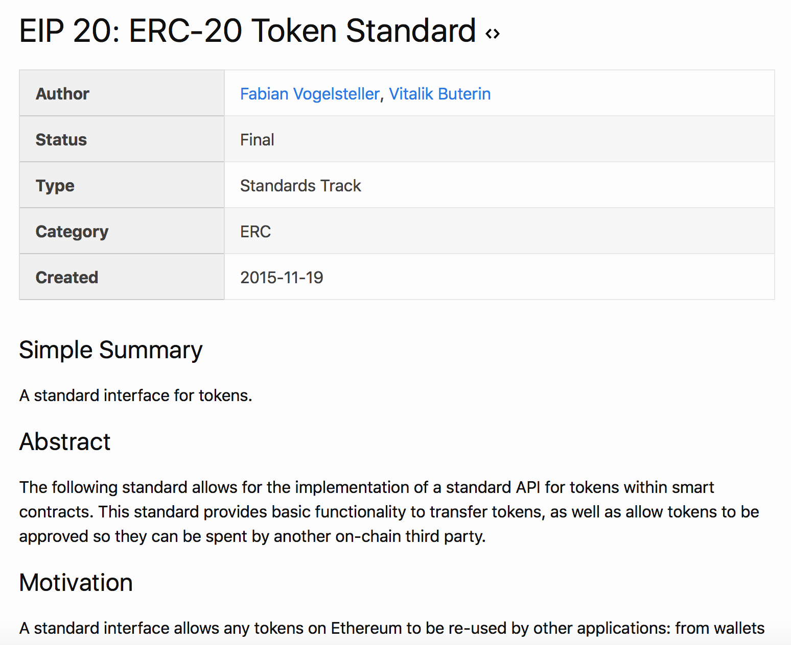

How To Ethereum Improvement Proposal
Because you may want to... 
Before this gets started...
Some Resources for EIPs
List of EIPs that made it to draft
https://eips.ethereum.org/
EIP-1: Purpose and Guidelines
https://eips.ethereum.org/EIPS/eip-1
What are EIPs?
"Ethereum Improvement Proposals describe standards for the Ethereum platform, including core protocol specs, client APIs, and contract standards."
What are ERCs?
"ERCs are a type of EIP which describe application-level standards and conventions, including contract standards."
What is a technical standard?
A formal document which establishes uniform engineering or technical criteria, methods, processes, and practices.
What drives the EIP process?
- The process exists to create high quality proposals, accepted by consensus of the community
- For quality, we seek competent input
- For acceptance, we seek buy-in from stakeholders
The EIPs are in a git repo!
"Because the EIPs are maintained as text files in a versioned repository, their revision history is the historical record of the feature proposal."
EIP-1: The EIP Work
- Needs-finding, defining requirements, engineering, prototyping
- Write the EIP using the style and format described
- Shepherd the discussions in the appropriate forums
- Build community consensus around the idea
EIP Editor Responsibilities
- Read the EIP to check if it is ready
- Check the EIP for language
- Assign an EIP number
- Merge the corresponding pull request
"The editors don't pass judgment on EIPs. We merely do the administrative & editorial part."
EIP Editors
The current EIP editors are:
* Nick Johnson (@arachnid)
* Casey Detrio (@cdetrio)
* Hudson Jameson (@Souptacular)
* Vitalik Buterin (@vbuterin)
* Nick Savers (@nicksavers)
* Martin Becze (@wanderer)
EIP-1: Types of EIPs
- Standard Track EIPs
- Core - improvements requiring a consensus fork
- Networking - devp2p, LES
- Interface - client API/RPC specifications
- ERC - app-level standards and conventions
- Informational EIPs - general guidelines or information
- Meta EIPs - includes decision-making surrounding Ethereum
Focusing on Core EIPs
Who is involved in Core EIPs?
- You, the champion or EIP author
- EIP editors
- Ethereum Core Developers
- Are there other important stakeholders?
Workflow of a successful Core EIP
Initial Submission
- Fork the repo in GitHub.
- Add your EIP to your fork. Use the EIP template.
- Submit a Pull Request & Status Change to the repo.
Steps Toward Final
WIP -> DRAFT -> LAST CALL -> ACCEPTED -> FINAL
Core EIP Workflows: Work In Process
WIP -> DRAFT -> LAST CALL -> ACCEPTED -> FINAL
- Champion creates a WIP EIP as a pull request
- Each status change is requested by the EIP author and reviewed by the EIP editors
Core EIP Workflows: Draft
WIP -> DRAFT -> LAST CALL -> ACCEPTED -> FINAL
Champion seeks support, creates a draft EIP as a pull request.
Core EIP Workflows: Draft
SUCCESS
- IF agreeable, EIP editor will assign the EIP a number
FAIL
- unfocused, broad, duplication of effort
- technically unsound
- not addressing backwards compatibility
- not in keeping with the Ethereum philosophy (huh?)
Core EIP Workflows: Last Call
WIP -> DRAFT -> LAST CALL -> ACCEPTED -> FINAL
Champion creates a Last Call EIP as a pull request
Notifies key stakeholders, etc.
Core EIP Workflows: Last Call
SUCCESS
- IF agreeable, the EIP editor sets a review end date
FAIL
- material changes are still expected to be made to the draft
FAIL++
- material changes or substantial unaddressed technical complaints will cause the EIP to revert to Draft!
Core EIP Workflows: Accepted
WIP -> DRAFT -> LAST CALL -> ACCEPTED -> FINAL
- this is now in the hands of the client developers.
- developer decisions to implement is NOT part of the EIP process!
Workflows: Final
WIP -> DRAFT -> LAST CALL -> ACCEPTED -> FINAL
- a Last Call without material changes or unaddressed technical complaints will become Final
- Core EIPs must be implemented in at least three viable Ethereum clients
- when the implementation is complete and adopted by the community, the status will be changed to Final
Format of EIPs
EIPs are written in markdown format.
Each EIP should have the following parts:
|
Preamble Simple Summary Abstract Motivation Specification |
Rationale Backwards Compatibility Test Cases Implementations Copyright Waiver |
Ready to Ethereum Improvement Proposal?
Start a discussion on Twitter or on
https://ethereum-magicians.org

Jamie
http://twitter.com/jemenger
This presentation was built with reveal.js https://github.com/hakimel/reveal.js